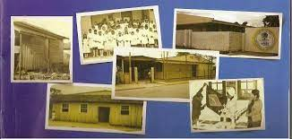

Feira de Empreendedorismo
Colégio Estadual Mathias Jacomel
Alunos do 2º Ano
OBJETIVOS
- Apresentar o que foi estudado neste trimestre
- Reunir diferentes habilidades
- Desenvolver ações multidisciplinares
Registrar a sua história, colocá-la no papel e eternizar os momentos e fatos importantes. Esse foi o objetivo de dois colégios do município de Pinhais. O Colégio Estadual Mathias Jacomel e o Colégio Estadual Amyntas de Barros lançaram livros contando suas histórias e seus projetos, com fotos e depoimentos de quem já passou pelas instituições. O Colégio Mathias Jacomel, o mais velho do município, completou no ano passado, 50 anos de fundação. “Fizemos o livro para comemorar o centenário do colégio, para resgatar um pouco da nossa história e, tudo isso contada pela boca de quem fez parte dessa trajetória”, destacou Marta Fernandes da Silva, secretária do colégio Mathias Jacomel. Já o Colégio Amyntas de Barros fez um resgate histórico através de entrevistas e pesquisa. Segundo a diretora da instituição Miria Freitas de Assis Chepak, o objetivo foi descobrir quem foi Amyntas de Barros, o patrono do colégio, além é claro de reconstruir a história e contar sobre os projetos desenvolvidos em âmbito escolar. “Nós resgatamos os 32 anos de história do colégio, fizemos uma pesquisa histórica para descobrir o porquê do nome Amyntas de Barros e retratamos os nossos projetos, desenvolvidos em contraturno, para destacar a qualidade do colégio”, salientou Miria. A entrega oficial desses materiais foi realizada na sexta-feira, 04 de abril, na Secretaria Municipal de Educação. Estiveram presentes além dos representantes dos colégios, o Prefeito Luizão Goulart, a Vice-Prefeita Marli Paulino e a Secretária de Educação Andrea Franceschini.